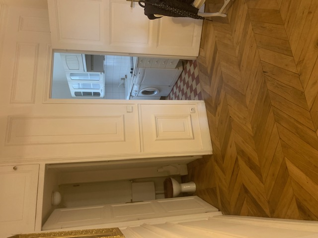
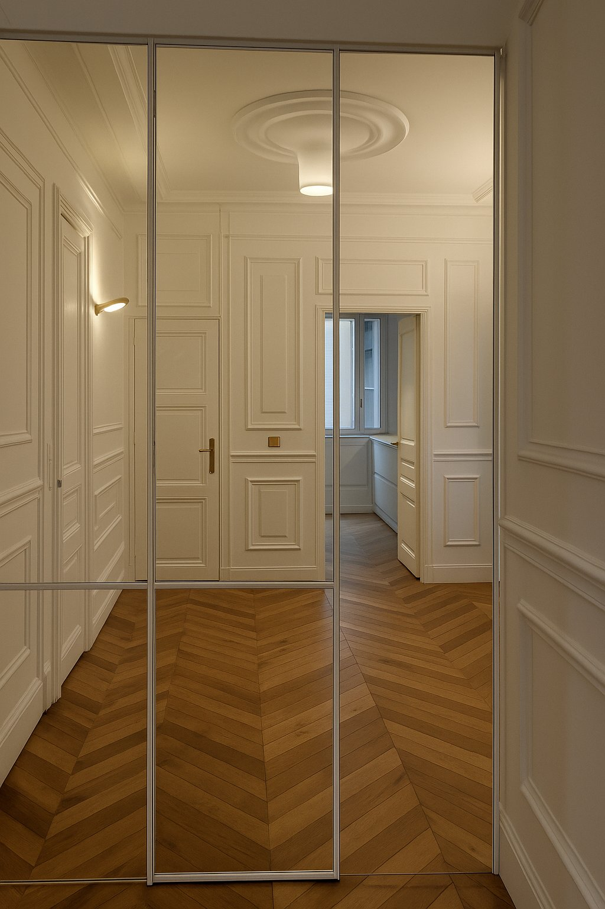
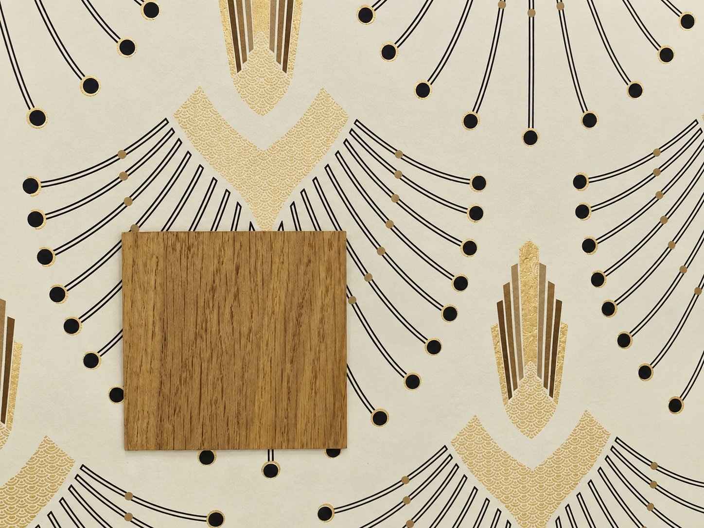
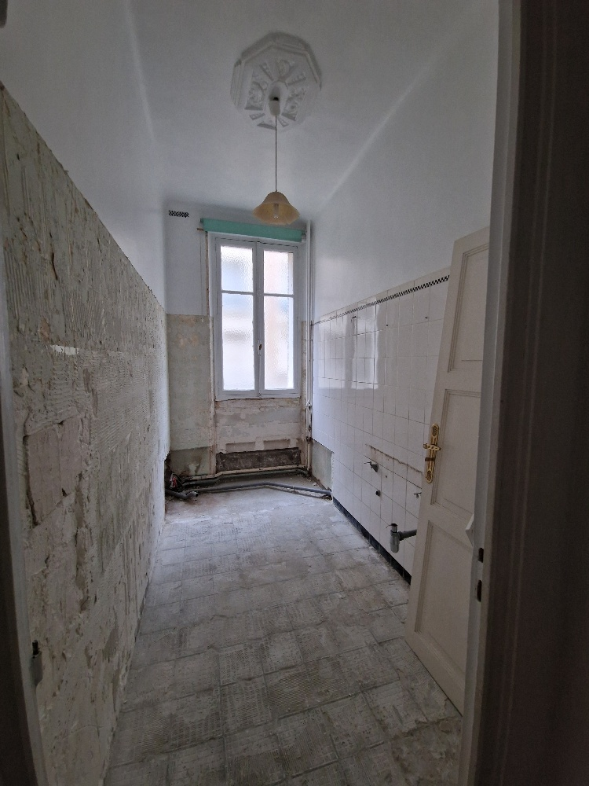
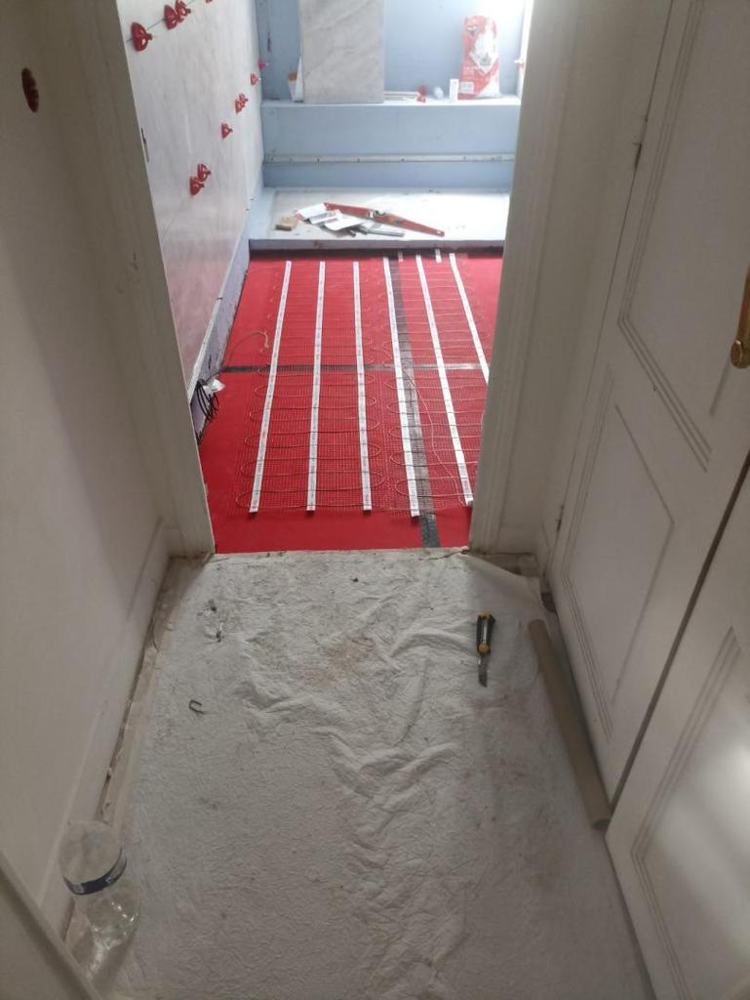
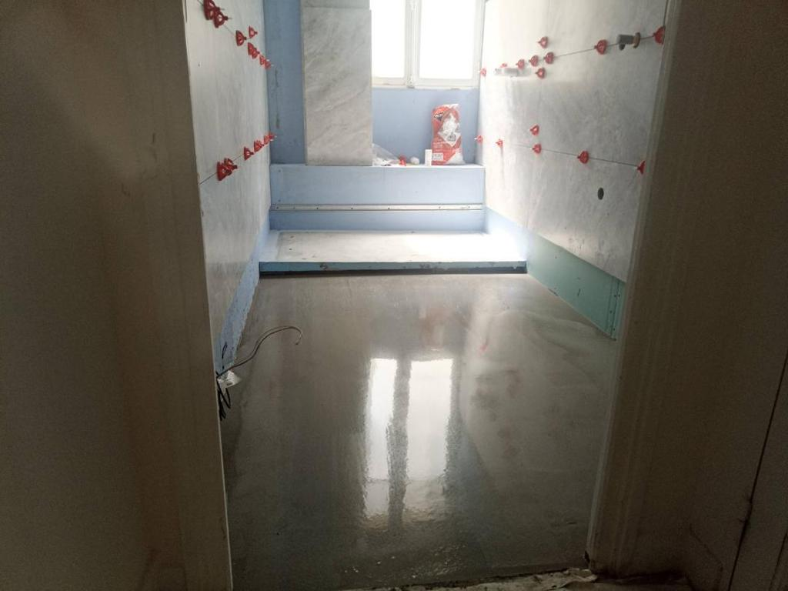

Rénovation complète d'un appartement Square Tolstoï, dans le 16e arrondissement de Paris. Restructuration totale des volumes : entrée à parquet en chevrons, cuisine ouverte et épurée, chambres refaites à neuf, salle de bain habillée de marbre et toilettes à l'identité affirmée.



Sélection du papier peint et de l'essence de bois



Un projet ? Parlons-en.
Contactez-nous